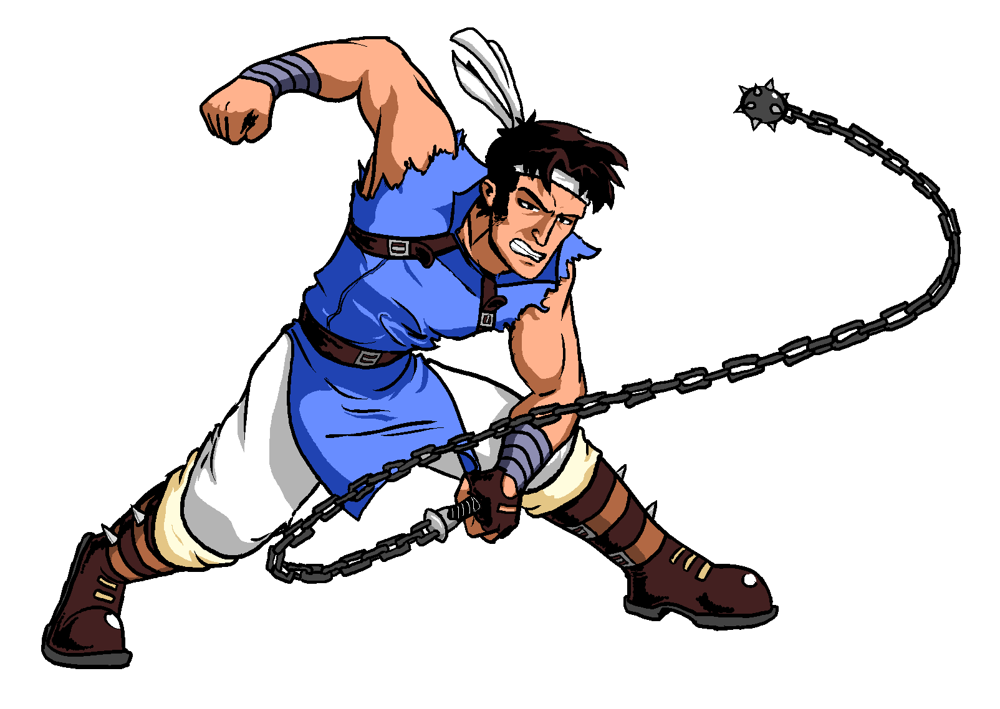

Color Art
It is rather rare that I actually finish a sketch and decide to give it some color, but here are some of the few such “finished” works I have made.
These are all really old (10 years ago), so they are kind of embarrassing for me to look at nowadays… Also, these are mostly digital art for now, I ought to get my on-paper works scanned and displayed here.
Original works
This is the first-ever drawing of the character which has become my mascot, the electric green mantaray:
Here is some simple coloring put above some of my sketches. Note that the large-headed zombie near the center is the only fan-art character here, the “Re-dead” from The Legend of Zelda - Wind Waker
This was an exercise done for a class in university - students were tasked with remaking/re-imagining an early renaissance painting: The Annunciation, with St. Emidius (1486) by Carlo Crivelli.
Fan art works
Here is a fan art of the famous scene between Gandalf and the Balrog, from The Lord of the Rings:

Here is a fan art of the seven characters that represent the christian seven sins, from The Binding of Isaac:

This is a drawing made for a friend named “RokuGurin”, way back in 2014 - this is an original character of his design.
Here is a rather old drawing of Richter Belmont from the Castlevania franchise, done entirely in mspaint:

Here is an experiement with lineart coloring and shading - this is supposed to be the “Elementalist” class from Final Fantasy Tactics: Advance.